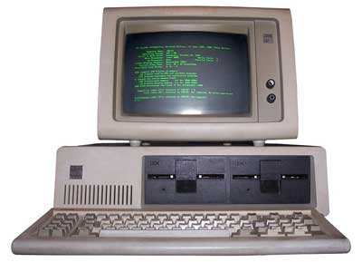
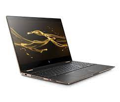

First Generation Computers
1940s-1950s
The first generation of computers used vacuum tubes for circuitry and magnetic drums for memory. They were large, expensive, and generated a lot of heat. ENIAC (Electronic Numerical Integrator and Computer) and UNIVAC I (Universal Automatic Computer) are examples of first-generation computers.
Second Generation Computers
1950s-1960s
This generation introduced transistors, which replaced vacuum tubes, resulting in smaller, more reliable, and less power-consuming computers. Magnetic core memory replaced magnetic drums, and assembly language programming became common. Computers of this era include IBM 1401 and UNIVAC II.
Third Generation Computers
1960s-1970s
Integrated circuits (ICs) were introduced during this period, allowing multiple transistors and components to be placed on a single silicon chip. This led to further miniaturization, increased processing power, and reduced cost. High-level programming languages like COBOL and FORTRAN were developed. Examples of third-generation computers are IBM System/360 and DEC PDP-11.
Fourth Generation Computers
1970s-1980s
Microprocessors, which contained complete central processing units (CPUs) on a single chip, were the hallmark of the fourth generation. This led to the development of personal computers (PCs) and microcomputers. Graphical User Interfaces (GUIs) and operating systems like Microsoft Windows emerged during this time. Notable computers from this generation include the IBM PC, Apple Macintosh, and Commodore 64.
Fifth Generation Computers
1980s-Present
The fifth generation of computers is characterized by parallel processing, artificial intelligence, and advanced networking capabilities. VLSI (Very Large Scale Integration) technology allowed for even more components to be packed onto a single chip, enhancing performance. Supercomputers and high-performance computing clusters are a prominent feature of this generation.
